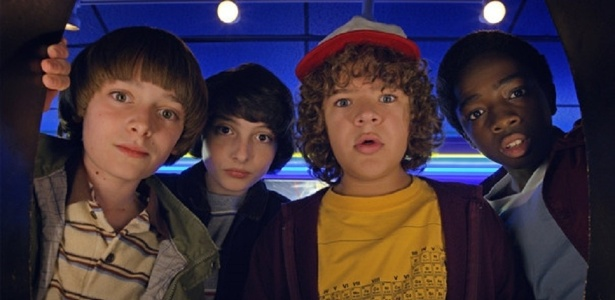
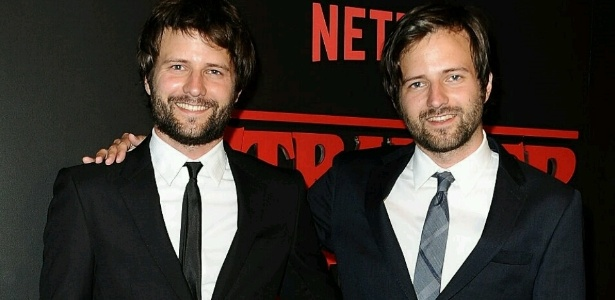
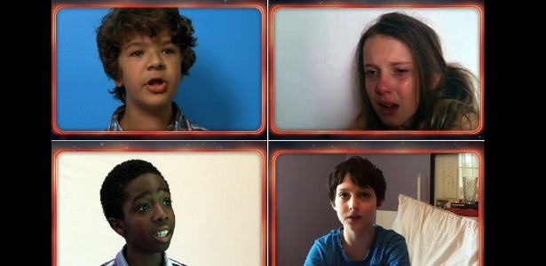
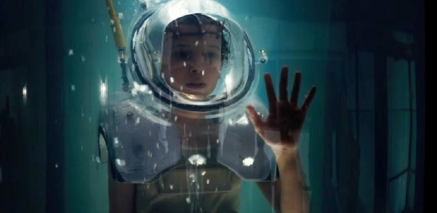
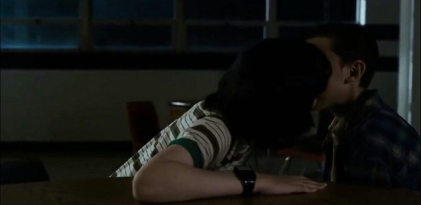

Inicio
Inicio >>Curiosidades
Direto do mundo invertido: 5 curiosidades sobre a série Stranger Things
A série Stranger Things é uma das mais populares do catálogo da Netflix, lançada em 2016 e com duas temporadas exibidas. Mas você sabia que, antes disso acontecer, ela já foi rejeitada 20 vezes pela produtora? Esta e outras curiosidades você vai descobrir agora!
Superando a rejeição
Seus criadores
1.000 crianças
Debaixo d'água
Primeiro beijo
Às vezes, tudo o que a gente precisa é superar uma rejeição e tentar novamente. Neste aspecto, os criadores da série Stranger Things foram bem persistentes: eles foram rejeitados cerca de 20 vezes pela Netflix antes de serem aceitos pela empresa de streaming. Uma das preocupações era que o elenco infantil poderia não conquistar o público adulto. Superada a rejeição, a série pode chegar a ter até cinco temporadas.
A série foi criada pelos gêmeos Matt Duffer e Ross Duffer, conhecidos como os The Duffer Brothers. Eles fazem filmes desde quando eram crianças, começando a produzir após ganhar de presente de seus pais uma câmera de vídeo Hi8. Além de Stranger Things, eles são conhecidos pelo filme de terror "Hidden", lançado em 2015.
Este foi o número aproximado de crianças que participaram das audições e enviaram seus vídeos de testes para fazer parte do elenco. Finn Wolfhard, o escolhido para ser o personagem Mike, gravou seu vídeo de cama, pois estava doente. Já Gaten Matarazzo havia feito audição para ser o personagem Mike e acabou virando o Dustin.
Além de flutuar, a personagem Eleven precisa também passar muito tempo embaixo d'água, principalmente nas cenas no laboratório de experiências. Em uma das cenas, a atriz usou um capacete Sea Tank, que pesa 31 quilos fora d'água e apenas seis quilos quando imerso. Nas cenas em que a atriz passa dentro da água, os diretores se comunicavam com ela através de um pequeno fone em seu ouvido.
Ainda falando da atriz principal Millie Bobby Brown, você sabia que o primeiro beijo da jovem foi em uma cena da série? Millie beija Finn Wolfhard, o ator que interpreta Mike, no final da primeira temporada. Na época da cena, a atriz tinha apenas doze anos
Copyright ©2021 - by Matheus Oliveira